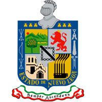

A mediados de siglo la pugna entre liberales y conservadores y la invasión de los Estados Unidos hicieron estragos en la región, la cual adquirió un fuerte sentido de autonomía y resentimiento hacia las autoridades mexicanas. En dos ocasiones el Estado intentó constituirse como un país independiente: primero como la República del Río Grande en 1840 y después como la República de la Sierra Madre alrededor de 1855. Ambos intentos fueron sofocados por el ejército mexicano. Hacia finales del siglo XIX y principios del siglo XX las industrias locales comenzaron a tomar auge a raíz de una relativa estabilidad y un mayor comercio con los Estados Unidos. La Revolución mexicana no tuvo gran repercusión en la región y ésta comenzó a crecer vertiginosamente en todos los ámbitos. Para finales del siglo XX Nuevo León tenía uno de los sistemas educativos más avanzados de América Latina y un nivel de vida comparable con el de varios países pertenecientes a Europa Occidental. Santiago Vidaurri, conocido gobernador de Nuevo León, fue fusilado por haber apoyado la invasión francesa a México y al emperador Maximiliano de Habsburgo, Porfirio Díaz lo ejecutó por traición a la nación.El clima de Nuevo León es en su mayor parte estepario semiseco y la época de lluvias ocurre entre mayo y octubre. En el cañón del Huajuco y la zona citrícola tienen clima subtropical, mientras que en la Sierra Madre el clima es templado. La mitad norte del territorio es de clima estepario con veranos muy cálidos e inviernos templados a fríos, presentándose heladas con frecuencia en el invierno y ocasionalmente nieve. La flora del estado está caracterizada por el matorral y los pastizales en las regiones bajas y los pinos y encinos en las sierras. La fauna de la región, gravemente mermada por las actividades agropecuarias y la deforestación, está compuesta por osos negros, pumas, jabalíes, zorros, coyotes y venados cola blanca junto con otras especies de menor tamaño. Tiene importantes influencias españolas y regionales, que comparte con el resto de la nación, así como germanas y eslavas además de sefarditas. Algunos platillos tradicionales son Machacado con huevo, cabrito en diferentes modalidades como el tradicional cabrito al pastor, carne seca. Esta última introducida presumiblemente por los sefarditasEl porcentaje de las distintas religiones en Nuevo León es similar al que se registra en el ámbito nacional; casi 88 % son cristianos católicos, 8.3 % tienen una doctrina distinta y 2.8 % no tienen creencias religiosas. El comportamiento mostrado a lo largo de 105 años es también similar a los datos nacionales; es decir, hasta 1910 casi 100 % de la población es católica, en 1921 empieza a mostrarse la aparición de otras confesiones; y de 1970 a la fecha, la disminución relativa de católicos es de menos de ocho puntos porcentuales. Una cuarta parte de los 51 municipios registran un porcentaje de catolicismo superior a 90 por ciento; el indicador más elevado (94.7 %) se registra en Villaldama; los más bajos corresponden a Galeana e Iturbide, con 77 % cada uno. Las denominaciones protestantes y evangélicas sobrepasan las 211 000 personas, volumen cercano al de la población residente en el municipio de Santa Catarina; un núcleo mayor de 10 000 personas se identifica en Apodaca, General Escobedo, Guadalupe, Monterrey, San Nicolás de los Garza y Santa Catarina, municipios pertenecientes a la zona metropolitana de Monterrey. Los adventistas del séptimo día significan 9,4 % en el municipio de Montemorelos; los núcleos más importantes corresponden a la zona metropolitana de Monterrey. El porcentaje de la población sin religión es ligeramente inferior al dato nacional; en los municipios de Galeana e Iturbide su porcentaje es 9.1 % y 8.7 %, respectivamente; entre éstos hay continuidad geográfica y limitan con otros municipios cuyo porcentaje de población no religiosa es superior a 5 por ciento. debido a las difíciles condiciones climáticas desérticas y la falta de tecnologías refrigerantes para la conservación de alimentos. El método central para solucionar tal problema, es por medio del uso de la sal como deshidratador, tal necesidad de conservar los alimentos por largo tiempo surge por los constantes enfrentamientos armados contra indígenas y filibusteros estadounidenses. El machacado con huevo es la combinación de huevo con carne seca (y algunos condimentos según el gusto).
